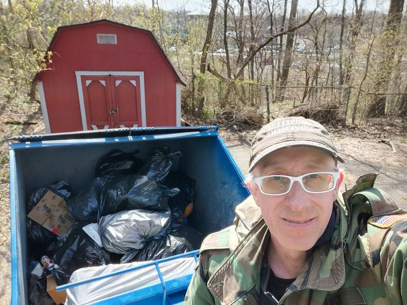

Mobile uploads
@[100064805494040:2048:City of Akron, Ohio - Mayor's Office] : "Hey Sage. We just found out that your dumpster is on city land."
@[724505103:2048:Sage Lewis] : "Oh wow. I was told it was private land and went through all the appropriate channels with the dumpster company to put it there. I'm sorry. I truly thought it was private land."
Mayor's Office: "Well it's city land. But we aren't using it. And since you pay to clean up trash from homeless people that would otherwise be in our parks you are welcome to keep it there."
Sage: "Gee wilikers. That sure is swell of you."
"Mayor's Office: "It's our pleasure. Thank you for being part of the solution to help our city get cleaned up."
YEAH RIGHT!
They stole our dumpster and yelled at everyone they possibly could to get that monstrosity off their land.
I. Don't. Quit.
I now have our dumpster on a church's property. They were more than happy to help the Middlebury community get cleaned up. And plus we now have an even BIGGER dumpster to clean up even MORE trash.
I am never going to quit helping homeless people.
Place: Ebenezer Apostolic Assembly Church (41.07188, -81.45663)
Address: 355 the Brooklands, Akron, OH 44305